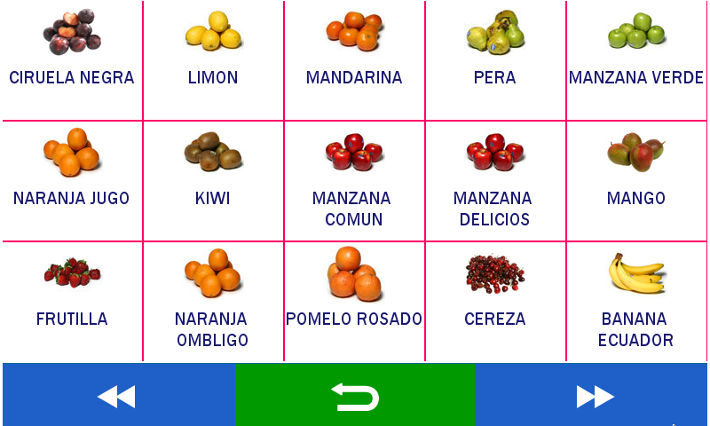

Display and Status Indicators
1. Display

2. Status Indicators
A: Sales mode
The customer’s display shows advertisement and the weight indicator.
References: 0. VNC indicator (remote desktop) active. 1. Current seller’s user. 2. Current Tare weight. 3. Shortcuts. 4. Weight and units indicator. 5. Entry space/multiple search 6. Zero weight indicator. 7. Tare weight indicator, 8. Stable weight indicator. 9. Pre-Packed mode ON. 10. Status bar. 11. Power source. 12. Battery status. 13. Connection to the remote database. 14. Date and Time. 15. Communication network (WiFi). 16. Communication network (Ethernet). 17. Item search by number or description. 18. Ticket (Current sale) 19. Calculator.
References: 20. Shortcuts: the pre-loaded items are shown (maximum of 15 items per shortcut). 21. Shortcuts keys items with description and an image of up to 64 x 64 pixels.
References: 22. PLU selected item’s code. 23. Item’s assigned LOT number. 24. Item’s description. 25. Item’s assigned price LIST. 26. Unit price or price per kg for the item. 27. Weight and units indicator. 28. Item’s total price.
B. Self service mode.

If the scale is on the self service mode, the home screen will let you select between two options to filter the PLU’s search.

The shortcuts will be shown to navigate through the pages or to return to the home screen.
Once the preferred PLU has been selected, the sales screen will show you two options:
- CANCEL. It cancels the selection and returns to the home screen.
- PRINT. It confirms the PLU’s sale and prints the corresponding label.